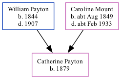

Catherine J Payton 1879 -
[ Home ] | [ Calendar ] | [ Surnames Index ] | [ Family History ]The child of William Payton (a brickmaker) and Caroline MountCatherine Payton, the second cousin three-times-removed on the mother's side of Nigel Horne, was born in Herne, Kent, England in 18791.
Throughout her life, she lived at Brickfield in Herne on Apr 3, 18811; and on Eddington Lane, Herne Bay, Kent, England on Apr 5, 18912.
Parents
- William was born in 1844
- Caroline was born c. Aug 1849
Citations
- 1881 England, Wales & Scotland Census - Findmypast (was age 2 and the daughter of the head of the household)
- 1891 England, Wales & Scotland Census - Findmypast (was age 12 and the daughter of the head of the household)
Media
1891 England, Wales & Scotland Census - GBC/1891/0005762411
Family Tree
Generated by ged2site. Last updated on Nov 13, 2024